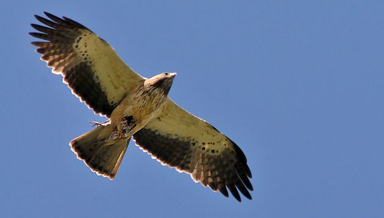
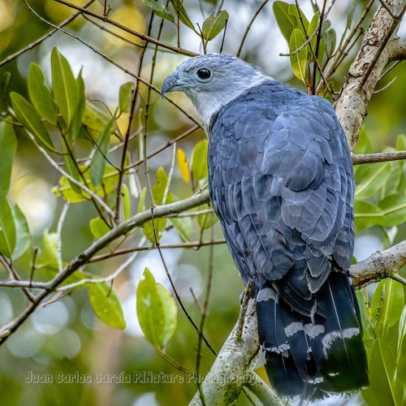

ACCIPITRIDOS
Accipitridae
Accipitridae
Características principales

Los accipítridos (Accipitridae) son un clado de aves rapaces diurnas, con categoría taxonómica de familia, de distribución cosmopolita (aunque el grueso de las especies habitan en el Neotrópico) compuesto por más de 200 especies. Se caracterizan por poseer un pico ganchudo, grande y fuerte, el cual utilizan para desgarrar la carne de sus presas o bien de carroña. Presentan, a su vez, patas y garras fuertes a lo que se suma un excelente sentido de la visión, lo que les permite localizar presas potenciales a gran distancia.
Naturaleza

Algunas de estas aves se encuentran entre las de mayor peso capaces de volar. No solo son grandes, también tienen gran fortaleza. La largas y potentes alas les permiten alcanzar grandes alturas. En las patas, los dedos y uñas forman formidables garras. El pico es fuerte, curvado desde la base y generalmente dentado, perfectamente diseñado para desgarrar.
Tienen la vista muy desarrollada, y son capaces de vuelos muy rápidos y ágiles. El esternón ocupa toda la cara ventral del cuerpo y presenta una quilla muy alta, en la que se insertan poderosos músculos. La cola tiene doce rectrices muy largas, en general.
Anidan en árboles o en el suelo en lugares poco accesibles, y la nidada consta, en general, de hasta cuatro huevos que suelen ser de color blanco.